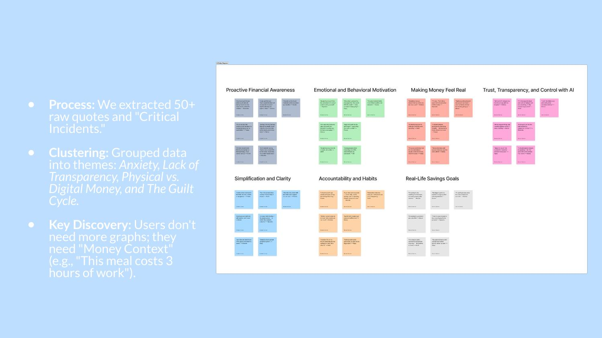
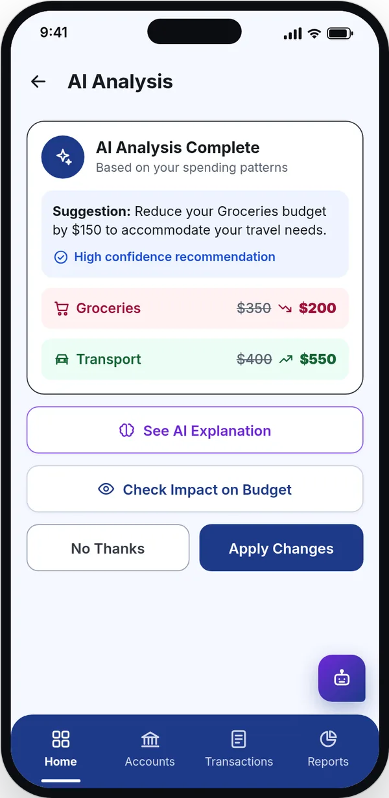
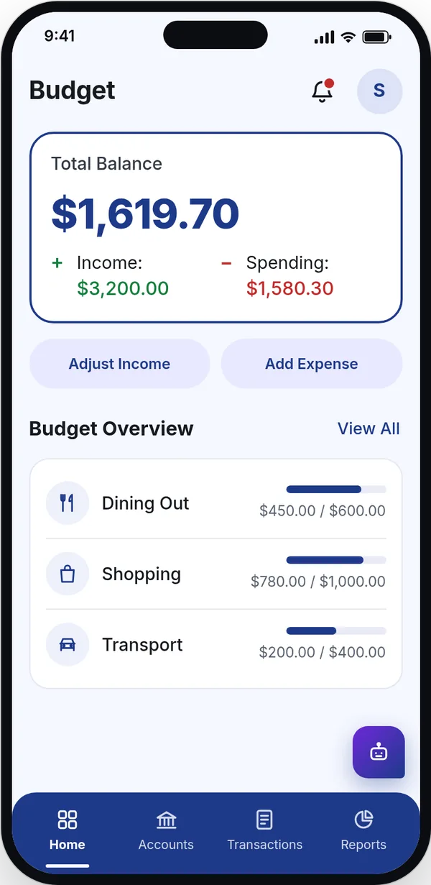

CapstoneFintech, AI · 4 min read
An AI budgeting coach people trust
Tapping a card doesn't feel like spending, so small buys and forgotten subscriptions add up. For our master's capstone, our team of 4 designed Money Anchor, a budgeting app with an AI coach that speaks up before you spend and explains why.
Tested2 rounds of usability testing, 16 people
Money that doesn't feel real
Cards and digital wallets remove the small pain of paying, so spending feels effortless until the statement arrives. Forgotten subscriptions keep charging. And most budgeting apps only chart the past, which many people avoid opening.
Why: So the aim was to help in the moment, before the money is gone, without judging.
"I spend more when I'm bored. Surfing online equals unnecessary spending."
"If my friends are going out, I'm going out too."
"I like when I get positive messages like, 'You saved $50 this week!'"
24 people, 50+ quotes
We read 40+ papers on spending behavior and benchmarked 10 budgeting apps, including Mint, YNAB, Rocket Money and Copilot. Then we interviewed 8 people aged 20 to 32 and ran 4 focus groups with 16 more, with university ethics (IRB) approval.
- People don't need more graphs. They need money in context, like "this meal costs 3 hours of work."
- Forgotten subscriptions were a big, silent leak.
- People would trust AI only if it explained itself and left the final say to them.
Why: Interviews covered private money habits. Focus groups surfaced the social side, like spending to keep up with friends.

100 ideas, down to 10
Each of us wrote 25 ideas, 100 in all. We sorted them into 7 themes, cut duplicates down to 64, then voted on each from "Not feasible" to "Must have". The top 10 went into the prototype, like spotting unused subscriptions and AI forecasts for savings goals.
Why: We kept the wild ideas too. A card that locks itself when you seem stressed was out of reach, but it pointed to the real need: a gentle nudge before you buy.
- 100ideas written, 25 each
- 64after sorting into 7 themes
- 10went into the prototype
Five sections, like a bank app
We sketched by hand, then wireframed 5 sections with a bottom bar, so each one is a tap away. Every screen was tied to a research finding.
Why: A layout like their bank's matched how people already picture their money, so there was less to learn.
The 5 sections
- Budgetprogress bars and a monthly snapshot
- Accountsbalances, goals and a subscription detector
- AI Assistantask questions, get suggestions
- Transactionssorted automatically, with trend alerts
- Reportsmonthly breakdowns by category
An AI that explains, and leaves you in charge
In Figma, we turned the wireframes into high-fidelity screens built from shared components. I designed the AI coach and the budget flows.

A suggestion you can check, apply or refuse. Key decision 1Explain every suggestion
The thinking: People wanted the reason and the final say, not orders. So each AI suggestion shows why, and how sure it is, before you apply it or say no.
TestedIn round two, 75% completely trusted the AI's budget advice.
Ask before you spend. Key decision 2Help before you buy
The thinking: Spending decisions happen in the moment, not in a monthly report. So you can ask the AI before a purchase, and it compares products, prices and stores within your budget.
TestedRound one: everyone finished the shopping task, and testers said it would save them time.
-
Key decision 3
A nudge, not a lecture
The thinking: People said apps that scold them make them avoid money altogether. So alerts are gentle, and the AI suggests while you decide.
Tested88% said an alert would make them rethink or cancel a purchase.
Two rounds, then fix what failed
We ran 2 rounds of moderated tests on Maze and Zoom, 8 people per round. Each person explored the app, acted on AI advice, adjusted a budget and asked the AI for buying advice, thinking out loud while Maze recorded success, time and misclicks.

The AI gets its own floating button. Changed after testingThe AI gets its own button
The thinking: In round one, the AI sat in the bottom menu and people missed it. It became a chat bubble you can open from any screen, and later got a gradient so it stands apart from the menu.
TestedRound two: 100% finished the AI chat task.
Before and after round one. Changed after testingButtons that say what they do
The thinking: Testers misread the plus and minus icons, and the home screen felt crowded. We removed the quick-action buttons and labeled the main ones Adjust Income and Add Expense.
TestedRound two: 100% success and 0% misclicks exploring the app.
-
Still open after testing
Still hard: changing a budget
The thinking: In round two, adjusting a budget still caused 54.7% misclicks, because people couldn't find where to start. We added Adjust to a menu on each budget.
Not yet testedChanged after round two; not tested again.
What changed, and what I learned
- 22% → 100%success exploring the app
- 0%misclicks on it in round two
- 75%completely trusted the AI's advice
- 88%would rethink a purchase after an alert
Watch, don't just ask
Testers rated navigation 4.4 out of 5 while still missing buttons. Behavior told the real story.
If they can't find it, it can't help
The AI only worked for people once it was visible from every screen.
Trust takes time
People wanted suggestions, not orders, and checked bigger decisions themselves.
What I'd do differently now
Ideas for a next version, not built yet.
Voice check-ins
A ten-second spoken summary of the week, for people who avoid opening money apps.
Let people correct the AI
One tap fixes a wrong category, so the suggestions get more personal over time.
Did you like this case study?
Tell me what worked, or what you'd change. It comes straight to me.